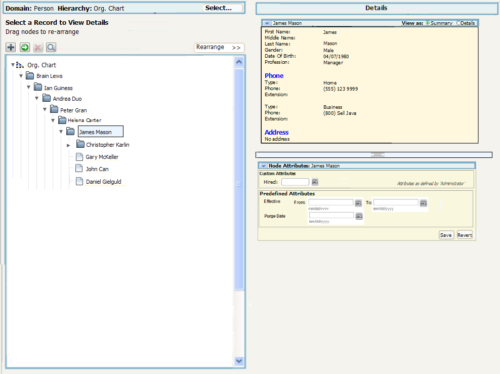
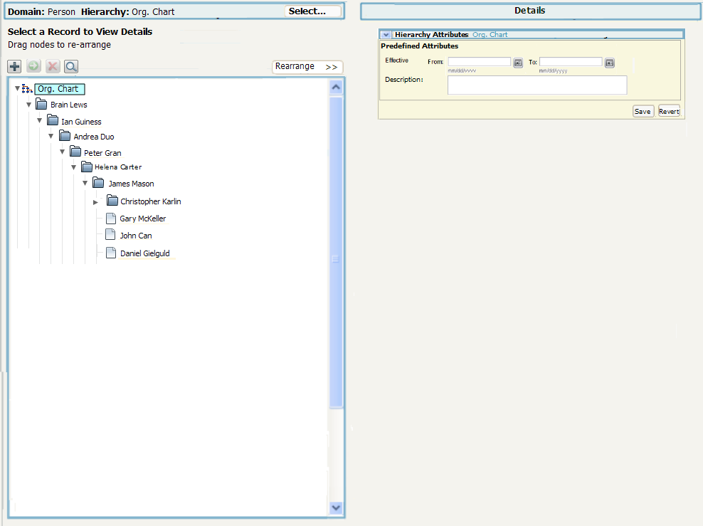
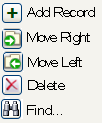

Heirarchy (tree) with "Destination>>" option
In this design the user can show / hide an extra tree that can be used
to re-arrange records. The same look and feel of the tree
area would apply to the Manage->Relationship->Maintain by
Record screen.
In this design the screen is initially devided in two equal areas, each
area should be resizable. If the user selects the Show
Move>> option the screen first area is divded in half and
the screen is rearanged to be in thirds.
Initial Screen with option to show a second tree

Screen with Move Tree shown
Notes:
- Hierarchy details are of last selected record on either
tree. In this example, Suhanto Wihardja was just selected.
Screen with the root Hiearchy node selected
If the
root node is selected then only the attributes associated with the
entire hiearachy are shown as there are no record details.

Icons
Here is the tooltips that would be shown for the icons.
Note: The icons are expected to change.

This page last
changed on 13-Oct-2008
21:31:00 PDT by andreakendall@dev.java.net